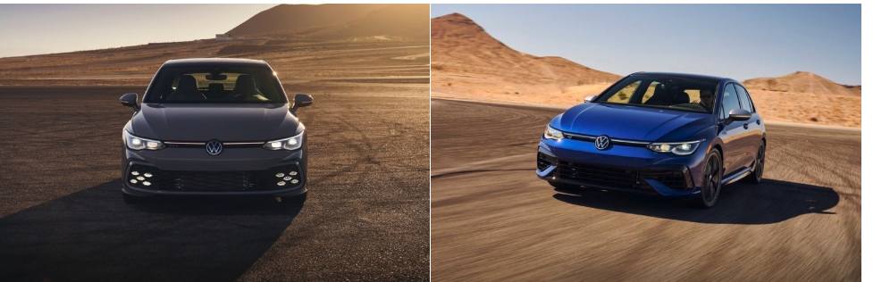

Відмінності в екстер'єрі
VW Golf GTI і Golf R 2022 року мають ідентичний дизайн екстер'єру та інтер'єру і схожі сучасні технології. Проте, кілька відмінностей роблять Golf R трохи спортивнішим і агресивнішим, ніж GTI, наприклад, його гострі бічні спідниці і агресивніший дифузор із вихлопною системою з чотирма наконечниками. Golf GTI являє собою м'язисту модернізацію стандартної моделі Golf, він ширший і більший. У нього потужний задній бампер із вихлопною трубою з двома наконечниками, бічні спідниці та унікальні багатопроменеві світлодіодні протитуманні фари, які надають йому особливого вигляду, особливо вночі. І в той час як Golf R носить значок R на решітці радіатора і задніх дверях, GTI хизується логотипом GTI.
Golf GTI також має червону решітку радіатора і пофарбовані в червоний колір гальмівні супорти. Він доступний у кольорах White Pearl, Moonstone Grey, Kings Red Metallic, Atlantic Blue Metallic, Reflex Silver Metallic, Deep Black Pearl і спеціальному забарвленні кузова Pomelo Yellow Metallic, ексклюзивному для Autobahn. З іншого боку, Golf R випускається у фірмовому кольорі Lapiz Blue Metallic, а також у варіантах забарвлення кузова Pure White і Deep Black Pearl.
У міру того, як Mk8 Golf повільно просувається в американські автосалони, він отримає деякі функції, покликані допомогти водіям рухатися швидше. Німецький автовиробник розповів, які саме цифрові функції прикрашатимуть дисплеї Mk8 Golf R і GTI. Комбінація з двох екранів, 10-дюймового центрального та 10,25-дюймового цифрового приладового дисплеїв за кермовим колесом забезпечать широкі можливості для налаштування Golf. Особливість, яка може найбільше зацікавити прихильників Volkswagen Golf R, - це горизонтальний лічильник обертів, що знаходиться над дисплеєм за кермовим колесом. Він буде доступний для моделі з DSG і відображатиметься в режимах "Спеціальний" і "Дрифт". Як і у випадку зі світловим дисплеєм на рульовому колесі автомобіля F1, у міру збільшення обертів шкала обертів заповнюється, даючи чітку вказівку на оптимальну точку перемикання. На тому ж екрані також може відображатися тиск наддуву, температура коробки передач, крутний момент, потужність, розподіл крутного моменту від системи повного приводу і колін таймера в Golf R. Потужніший Golf також оснащений кнопкою R, якої можна або злегка торкнутися, щоб відкрити меню режиму водіння, або сильно натиснути, щоб перевести автомобіль у режим перегонів. Незалежно від того, який Golf ви виберете, в автомобілі буде кнопка "Перегляд", яка переведе цифрову комбінацію приладів в особливу конфігурацію з великим (круглим) тахометром посередині з двома налаштованими датчиками на ваш вибір по обидва боки, які можуть показувати, приміром, тиск наддуву і вихідну потужність.
